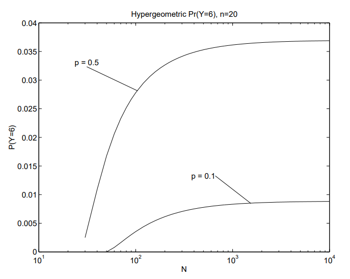
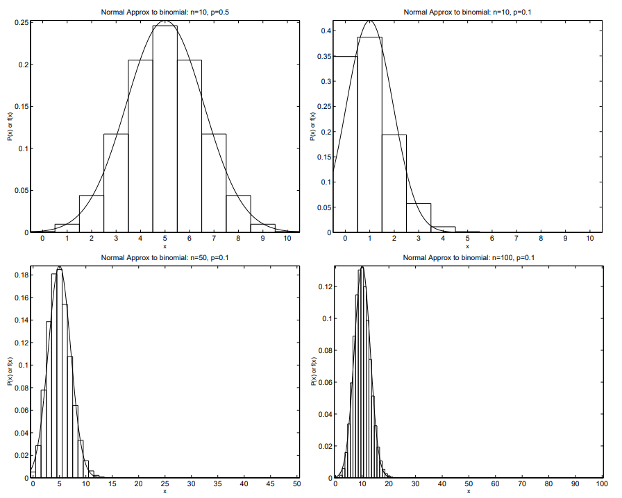
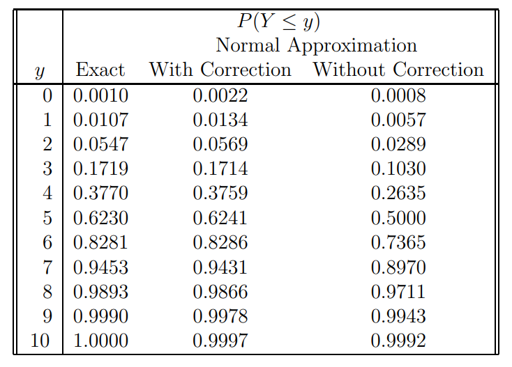

4 베르누이 및 관련 확률변수
4.1 베르누이 모집단의 표본추출
- 베르누이 확률변수는 지지집합이 \(S=\{0, 1\}\)인 확률변수이다.
- 즉, \(X\)가 베르누이 확률변수이면 \(X=1\)(성공) 또는 \(X=0\)(실패)이다.
- 확률질량함수(pmf): 성공확률을 \(p\)로 나타내면,
\[ \begin{align} f_X(x)=\begin{cases} p \,\,\, &\mathrm{if} \,\,\, x=1, \,\,\, p\in[0,1] \\ 1-p \,\,\, &\mathrm{if} \,\,\, x=0, \,\,\, p\in[0,1]\\ 0 \,\,\, &\mathrm{otherwise} \end{cases} \end{align} \]
이는 모수 \(p\)로 지표화된 pmf들의 한 계열이다.
지시함수: 지시함수는 치역이 \(\{0, 1\}\)인 함수이다.
- 지시함수는 문자 \(I\)로 표기한다. 구체적으로 \(I_A(a)\)는 다음과 같이 정의된다.
\[ I_A(a)=\begin{cases} 1 \,\,\, \mathrm{if} \,\,\, a\in A \\ 0 \,\,\, \mathrm{otherwise} \end{cases} \]
- 예
- \(I_{(0,100)}(-2.6)=0\)
- \(I_{(0,100)}(2.6)=1\)
- \(I_{\{0,100\}}(2.6)=0\)
- pmf의 다른 표현:
\[ f_{X}(x)=p^{x}(1-p)^{1-x},\,\,\, {\mathrm{for}} \,\,\, x=0,1 \,\,\,{\mathrm{and}}\,\,\, p\in[0,1] \]
\[ f_{X}(x)=p^{x}(1-p)^{1-x}I_{\{0,1\}}(x)I_{[0,1]}(p) \]
모멘트: \[ \operatorname{E}(X^{k})=p\ \operatorname{for}\ k=1,2,\dots \]
결과:
\[ \mu_{X}=p\,\,\, \mathrm{and}\,\,\,\sigma_{X}^{2}=p(1-p) \]
- 약어: i.i.d.라는 표기는 “독립이고 동일한 분포를 따른다(독립이고 동일한 분포를 따른다)”는 뜻이다.
베르누이 확률변수열
- 복원추출: 베르누이 과정
- 성질: 다음 결과들은 \(i = 1,2,\ldots\)에 대해 \(X_i\stackrel{\mathrm{iid}}{\sim}\mathrm{Bern}(p)\)라는 사실에서 나온다. – 서로 겹치지 않는 시행열은 독립이다. – 연속된 시행들의 한 묶음의 분포는 같은 길이를 가진 다른 어떤 시행 묶음의 분포와도 동일하다(이를 정상성이라고 한다). – 미래 시행들의 분포는 과거 시행 결과와 독립이다.
- \(X_1,\cdots,X_n\)의 결합 pmf:
\[ f_{X_{1},X_{2},\dots,X_{n}}(x_{1},x_{2},\dots,x_{n}|p)=p^{y}(1-p)^{n-y}I_{\{0,1,\dots,n\}}(y)I_{\{0,1\}}(p), \],
여기서 \(y=\sum_{i=1}^{n}x_{i}.\)
- 비복원추출
- 모집단은 \(N\)개의 항목을 포함하며, 그중 \(M\)개는 1(성공), \(N − M\)개는 \(0\)(실패)이다.
- \(N\)개의 항목 중에서 \(n\)개를 무작위로 비복원추출한다.
- \(X_i\)를 \(i\)번째 시행에서 추출된 항목의 값이라고 하자. 이때 각 \(X_i\)는 베르누이 확률변수이다.
- 결합 pmf:
\[ f_{X_{1},X_{2},\ldots,X_{n}}(x_{1},x_{2},\ldots,x_{n}|M,N,n)={\frac{(M)_{y}(N-M)_{n-y}}{(N)_{n}}}I_{S_{Y}}(y) \]
\[ =\frac{\binom{M}{y}\binom{N-M}{n-y}}{\binom{n}{y}\binom{N}{n}} I_{SY}(y), \] 여기서 \(y=\sum_{i=1}^{n}x_{i}\) 그리고 \(S_{Y}=\{\mathrm{max}(0,n+M-N),\cdots,\mathrm{min}(n,M)\}.\)
- 참고로 \(Y\)의 지지집합은 \(y\geq0;\;y\leq\,n;\;y\leq\;M;\) 및 \(n-y\leq N-M\)에서 얻어진다.
4.2 이항분포
- \(X_{1},X_{2},\cdots,X_{n}\)이 iid \(Bern(p)\)라고 하자. 그러면
\[ Y=\sum_{i=1}^{n}X_{i}\sim\mathrm{Bin}(n,p). \]
- 확률질량함수:
\[ f_{Y}(y)=\ {\binom{n}{y}}p^{y}(1-p)^{n-y} \]
여기서 \(y=0,1,\cdots,n\) 그리고 \(p\in[0,1].\)
이 결과를 정당화하려면, Pr(\(Y=y\))가 \(\sum x_{i}=y\)를 만족하는 특정 \(X_i\)들의 열이 나타날 확률에, \(\sum x_i=y\)를 만족하는 가능한 열의 개수를 곱한 것임을 주목하라. - \(Y\)의 pmf는 확률생성함수를 사용하여 \(X_i\)의 pmf로부터도 얻을 수 있다.
모멘트
- \(E(Y)=E(\sum_{i=1}^{n}X_{i})=nE(X)=np.\)
- \(Var(Y)=Var(\sum_{i=1}^{n}X_{i})=nVar(X)=n p(1-p).\)
- \({\sum}_{y=k}^{n}f_{Y}(y)=\mathrm{P}(Y\geq k)\).
- 주의: 대부분의 누적 이항분포표는 \(\mathrm{Pr}(Y\leq k)\) 값을 제공한다.
재생성질: \(\ Y_{1},Y_{2},\ldots,Y_{k}\)가 서로 독립이고 \(Y_{i}\sim\mathrm{Bin}(n_{i},p)\)이면, \(n=\sum_{i=1}^{k}n_{i}\)일 때 \(\sum_{i=1}^{k}Y_{i}\sim\mathrm{Bin}(n,p)\)이다.
- 이 결과를 정당화하려면 각 \(Y_i\)를 iid 베르누이 확률변수들의 합으로 나타내면 된다.
- 또 다른 정당화 방법은 확률생성함수를 사용하는 것이다.
- \(Y_i\sim\mathrm{Bin}(n_i,p)\)이면, \(Y\)의 pgf는 다음과 같다.
\[ \begin{align} \eta_{Y}(t)&=E(t^{Y})=\sum_{y=0}^{n}{\binom{n}{y}}p^{y}(1-p)^{n-y}t^{y}\\ &=\sum_{y=0}^{n}{\binom{n}{y}}(p t)^{y}(1-p)^{n-y}=[p t+(1-p)]^{n} \end{align} \]
- \(i=1,\ldots\,k\)에 대해 \(Y_{i}\stackrel{\mathrm{ind}}{\sim}\mathrm{Bin}(n_{i},p)\)라고 하자. \(W=\sum_{i=1}^{k}Y_{i}\)라 두면, \(W\)의 pgf는 다음과 같다.
\[ \eta_{W}(t)=\operatorname{E}(t^{W})=\prod_{i=1}^{k}\eta_{Y_{i}}(t)=[p t+(1-p)]^{\sum_{i=1}^{k}n_{i}}. \]
- \(W\)의 pgf는 모수가 \(\sum_{i=1}^{k}\,n_{i}\)와 \(p\)인 이항확률변수의 pgf 형태를 가진다. 따라서,
\[ \{Y_{i}\}_{i=1}^{k}\stackrel{ind}{\sim}\ \mathrm{Bin}(n_{i},p)\Longrightarrow\sum_{i=1}^{k}Y_{i}\sim\mathrm{Bin}\left(\sum_{i=1}^{k}n_{i},p\right). \]
4.3 초기하분포
- 모집단은 \(N\)개의 항목을 포함하며, 그중 \(M\)개는 1(성공), \(N − M\)개는 \(0\)(실패)이다.
- \(n\leq N\)개의 항목을 무작위로 비복원추출한다.
- \(X_i\)를 \(i\)번째 시행에서 추출된 항목의 값이라 하고, \(Y=\sum_{i=1}^{n}X_i=\) 성공의 총개수라 하자. 그러면,
\[ Y\sim\mathrm{HyperG}(N,M,n). \]
- 확률질량함수:
\[ f_{y}(y|N,M,n)=\frac{{\binom{M}{y}\ {\binom{N-M}{n-y}}}}{{\binom{N}{n}}} \]
여기서 \(y\)는 \(max(0,n+M-N)\leq y\leq min(n,M)\)를 만족하는 정수이다.
참고: 이 확률은 \(Y=y\)개의 성공을 만드는 특정 \(X\)들의 열이 나타날 확률에 \(\binom{n}{y}\)를 곱한 것이다. 가능한 열의 개수는 \(\binom{n}{y}\)이다.
결과:
\[E(Y)=\sum_{i=1}^{n}E(X_{i})=\ n p, \]
여기서 \(p=M/N\).
결과: \(n=N\)이라고 하자. 그러면 \(\mathrm{Var}(\sum_{i=1}^{N}X_i)=\mathrm{Var}(M)=0\)이다. 교환가능성을 이용하면 \(\mathrm{Cov}(X_i,X_j)=-p(1-p)/(N-1)\)을 얻는다.
결과:
\[ \mathrm{Var}(Y)=n p(1-p)\left(1-\frac{n-1}{N-1}\right). \]
- 증명: 교환가능성에 의해,
\[ \begin{align} \mathrm{Var}(Y)&=\mathrm{Var}(\textstyle{\sum_{i=1}^{n}X_{i}})=n\,\mathrm{Var}(X_{1})+n(n-1)\mathrm{Cov}(X_{1},X_{2})\\ &=n p(1-p)-n(n-1)p(1-p)/(N-1)\\ &=n p(1-p)(1-{\frac{n-1}{N-1}}). \end{align} \]
- 응용: \(2 \times 2\) 표에서 \(H_0:p_1=p_2\)에 대한 Fisher의 정확검정.
- \(Y_1\sim\mathrm{Bin}(n_1,p_1)\) 및 \(Y_2\sim\mathrm{Bin}(n_2,p_2)\)가 서로 독립인 확률변수라고 하자.
- \(p_1=p_2\)라고 가정하고, \(Y_1+Y_2=m_1\)이 주어졌을 때 \(Y_1\)의 조건부분포를 구하라.
- 풀이: 공통값을 \(p\)라 두고 \(p_1\)과 \(p_2\)를 모두 \(p\)로 쓴다. 그러면
\[ \begin{align} Pr(Y_{1}=y_{1}|Y_{1}+Y_{2}=m_{1})&={\frac{Pr(Y_{1}=y_{1}\ \mathrm{and}\ Y_{1}+Y_{2}=m_{1})}{Pr(Y_{1}+Y_{2}=m_{1})}} \\ &=\frac{\mathrm{Pr}(Y_{1}=y_{1},Y_{2}=m_{1}-y_{1})}{\mathrm{Pr}(Y_{1}+Y_{2}=m_{1})}\\ &=\frac{{\binom{n_{1}}{y_{1}}}p^{y_{1}}(1-p)^{n_{1}-y_{1}}{\binom{n_{2}}{m_{1}-y_{1}}}p^{m_{1}-y_{1}}(1-p)^{n_{2}-m_{1}+y_{1}}}{\binom{n_{1}+n_{2}}{m_{1}}p^{m_{1}}(1-p)^{n_{1}+n_{2}-m_{1}}}\\ &=\frac{{\binom{n_{1}}{y_{1}}}{\binom{n_{2}}{m_{1}-y_{1}}}} {\binom{n_{1}+n_{2}}{m_{1}}} \end{align} \]
따라서 \(Y1+Y2=m1\)이라는 조건하에서 확률변수 \(Y_1\)은 \(hyperG(n_1+n_2,n_1,m_1)\)를 따른다.
초기하분포의 이항근사. \(N\)이 크고 \(p=M/N\)이 \(0\) 또는 \(1\)에 가깝지 않으면,
\[ Y\sim HyperG(N,M,n) {\implies} Y\sim{\mathrm{Bin}}(n,p) \]
- 증명: \(N\)이 무한대로 갈 때 \(p=M/N\)과 \(n\)이 모두 일정하게 유지된다고 하자. 그러면
\[ \begin{align} lim_{N\rightarrow \infty}f_{y}(y|N,M,n)&= lim_{N\rightarrow \infty} \frac{\binom{M}{y}\binom{N-M}{n-y}}{\binom{N}{n}}\\ &=lim_{N\rightarrow\infty} \binom{n}{y} \frac{(M)_y(N-M)_{n-y}}{(N)_n}\\ &=lim_{N\to\infty}\binom{n}{y}\left({\frac{M}{N}}\right)\left({\frac{M-1}{N-1}}\right)\cdots \left({\frac{M-y+1}{N-y+1}}\right) \\ &\times\left({\frac{N-M}{N-y}}\right)\left({\frac{N-M-1}{N-y-1}}\right)\cdots\left({\frac{N-M-n+y+1}{N-n+1}}\right) \\ &lim_{N\rightarrow \infty} \binom{n}{y} \left({\frac{M}{N}}\right) \left({\frac{\frac{M}{N}-{\frac{1}{N}}}{1-{\frac{1}{N}}}} \right) \cdots \left({\frac{\frac{M}{N}-{\frac{y-1}{N}}}{1-{\frac{y-1}{N}}}} \right) \\ & \times \left({\frac{1-{\frac{M}{N}}}{1-{\frac{y}{N}}}} \right) \left({\frac{1-{\frac{M}{N}}-{\frac{1}{N}}}{1-{\frac{y-1}{N}}}}\right)\cdots \left({\frac{1-{\frac{M}{N}}-{\frac{n-y-1}{N}}}{1-{\frac{n-1}{N}}}} \right) \\ &={\binom{n}{y}}p^{y}(1-p)^{n-y} \end{align} \]
- 예시: \(n=20, y=6\)이고 \(p=0.1\) 또는 \(p=0.5\)라고 하자. 이항확률은 다음과 같다.
\[ \mathrm{Pr}(Y=6|n=20,p=0.1)=0.0089 \]
그리고
\[ \mathrm{Pr}(Y=6|n=20,p=0.5)=0.0370 \]
- 다양한 모집단 크기에 대한 초기하확률은 아래에 제시되어 있다.
- \(N\rightarrow\infty\)일 때 초기하분포의 확률들이 이항분포의 확률로 수렴함을 알 수 있다.

4.4 기하분포
- \(X_1,X_2,\dots\)를 iid \(\operatorname{Bern}(p)\) 확률변수들의 무한열이라 하자.
- \(Z\)를 첫 번째 성공이 발생하는 시행 번호라 하자. 그러면,
\[ Z\sim\mathrm{Geo}(p). \]
\[ f_{Z}(z)=(1-p)^{z-1}p \]
여기서 \(z=1,2,\ldots\) 그리고 \(p\in(0,1]\).
- 결과: \(Z\sim\mathrm{Geo}(p)\)이면,
\[ E(Z) = 1/p \]
- 증명: \(q=1-p\)라 두면,
\[ \begin{align} E(Z)&=\sum_{i=1}^{\infty}i p q^{i-1}=p\sum_{i=1}^{\infty}i q^{i-1}=p\frac{d}{d q}\sum_{i=1}^{\infty}q^{i}\\ &=\;p\frac{d}{dq}\left(\frac{1}{1-q}-1\right)=p\frac{1}{(1-q)^{2}}=\frac{1}{p} \end{align} \]
- 결과: \(Z\sim\mathrm{Geo}(p)\)이면,
\[ \mathrm{Var}(Z)=q/p^{2} \]
- 증명 힌트: \(q=1-p\)라 두면,
\[ E[Z(Z-1)]=\sum_{i=1}^{\infty}i(i-1)p q^{i-1}=p q\sum_{i=1}^{\infty}i(i-1)q^{i-2}=p q{\frac{d^{2}}{dq^{2}}}\sum_{i=1}^{\infty}q^{i}\]
4.5 음이항분포
\(X_1,X_2,\ldots\)를 iid Bern(\(p\)) 확률변수들의 무한열이라 하자.
\(W\)를 \(r\)번째 성공이 발생하는 시행 번호라 하자. \[ W\sim\mathrm{Negbin}(r,p) \]
\[f_{W}(w)={\binom{w-1}{r-1}}p^{r}(1-p)^{w-r} \]
여기서 \(w=r,r+1,r+2,\ldots\) 그리고 \(p\in(0,1].\)
정당화: \(r\)번째 성공이 시행 \(w\)에서 발생한다면, 처음 \(w−1\)번의 시행 중에는 \(r−1\)개의 성공이 있어야 하고 시행 \(w\)에서 하나의 성공이 있어야 한다.
이 사건들은 독립이며 다음을 가진다. 각각 \(\textstyle{\binom{w-1}{r-1}}p^{r-1}(1-p)^{w-r}\) 및 \(p\)의 확률을 갖는다.
결과: \(W\sim\mathrm{NegBin}(r,p)\)이면 \(W\sim\sum_{i=1}^{r}Z_i\)이다. 여기서 \(i=1,2,\ldots\)에 대해 \(Z_i\stackrel{iid}{\sim}\mathrm{Geo}(p)\)이다.
따라서,
\[ E(W) = r/p\] \[ Var(W) = rq/p^{2}\]
- 음이항분포의 다른 정의
- \(X_1,X_2,\ldots\)를 iid Bern(\(p\)) 확률변수들의 무한열이라 하자.
- \(Y\)를 \(r\)번째 성공이 발생하기 전까지의 실패 횟수라고 하자.
- 그러면 \(Y\sim\mathrm{NegBin}^{*}(r,p)\)이다.
\[ f_{Y}(y)={\binom{r+y-1}{y}}p^{r}(1-p)^{y} \]
여기서 \(y=0,1,\dots\) 그리고 \(p\in(0,1]\).
정당화: \(r\)번째 성공이 시행 \(y+r\)에서 발생한다면, 처음 \(r+y−1\)번 시행에는 \(y\)개의 실패가 있고 시행 \(r+y\)에서 하나의 성공이 있어야 한다.
이 사건들은 독립이며 각각 \(\binom{r+y-1}{y}p^{r-1}(1-p)^y\) 및 \(p\)의 확률을 갖는다.
결과: \(Y\sim\mathrm{NegBin}^{*}(r,p)\)이면 \(Y=W-r\)이다. 따라서,
\[ E(Y)=E(W)-r=r/p-r=r(1-p)/p \]
\[
Var(Y)=\mathrm{{Var}}(W-r)=\mathrm{{Var}}(W)=r q/p^{2}
\]
4.6 음초기하분포
모집단은 \(N\)개의 항목을 포함하며, 그중 \(M\)개는 1(성공), \(N − M\)개는 \(0\)(실패)이다.
항목들을 무작위로 비복원추출한다.
\(X_i\)를 \(i\)번째 시행에서 추출된 항목의 값이라 하고, \(W\)를 \(r\)번째 성공이 발생하는 시행 번호라 하자.
- 주의: \(r\)은 \(r\leq M\)을 만족해야 한다.
\(W\sim\mathrm{NegHyperG}(N,M,r)\)
\[ f_{W}(w)=\frac{\binom{M}{r-1} \binom{N-M}{w-r}}{\binom{N}{w-1}}\left({\frac{M-r+1}{N-w+1}}\right) \]
여기서 \(w\equiv\,r,r+\,1,\ldots,M\).
정당화: \(r\)번째 성공이 시행 \(w\)에서 발생한다면, 처음 \(w−1\)번의 시행 중에는 \(r−1\)개의 성공이 있어야 하고 시행 \(w\)에서 하나의 성공이 있어야 한다.
이 사건들의 확률은 다음과 같다. 처음 \(w-1\)번 시행에서 \(r-1\)개의 성공이 발생할 확률은 \({\binom{M}{r-1}}{\binom{N-M}{w-r}}/\binom{N}{w-1}\)이고, 처음 \(w-1\)번 시행에서 \(r-1\)개의 성공이 있었다는 조건하에서 \(w\)번째 시행이 성공일 확률은 \((M-r+1)/(N-w+1)\)이다.
다른 표현: \[ f_{W}(w)= \frac{{\binom{w-1}{r-1}}\ {\binom{N-w}{M-r}}}{\binom{N}{M}} \]
정당화: \(M\)개의 성공을 배열하는 방법은 \(\binom{N}{M}\)가지이다.
- \(W=w\)이면 처음 \(w-1\)번 시행에는 \(r-1\)개의 성공이 있어야 하고, \(w\)번째 시행에는 성공 1개가 있어야 하며, 마지막 \(N-w\)번 시행에는 \(M-r\)개의 성공이 있어야 한다.
4.7 이항확률의 근사
4.7.1 이항분포의 정규근사
- \(Y\sim\mathrm{Bin}(n,p)\)이고 \(np(1-p)\gt5\)이면, \(Y \approx {N}\left[np,np(1-p)\right]\)이다.
- 이는 중심극한정리(CLT)의 응용이다.
- 아래에는 네 가지 이항분포가 제시되어 있다.
- \(n\)이 작고 \(p\)가 0 또는 1에 가까우면 정규근사가 그다지 정확하지 않음을 알 수 있다.
- 일반적으로 정규근사는 \(np(1-p)\geq5\)일 때만 사용하는 것이 권장된다.

- 연속성 보정을 사용하면 정규근사의 정확도가 향상된다. 연속성 보정은 \(P(Y≤y)\)를 다음과 같이 근사하는 것이다.
\[ P(Y\leq y) \approx \Phi \left(\frac{y+0.5-n p}{\sqrt{n p(1-p)}}\right) \]
여기서 \(\Phi\)는 표준정규분포의 누적분포함수이다. 이는 다음과 같이 쓰는 대신 연속성 보정을 적용한 것이다.
\[ P(Y\leq y)\approx\Phi\left(\frac{y-n p}{\sqrt{n p(1-p)}}\right) \]
- 아래는 \(Y\sim\mathrm{Bin}(10,0.5)\)인 경우 연속성 보정을 적용한 근사와 적용하지 않은 근사의 비교이다.
- 여기서는 \(np(1-p)\geq5\) 조건이 만족되지 않는다는 점에 주의하라.

4.7.2 이항분포의 포아송근사
- \(Y\sim\mathrm{Bin}(n,p)\)이고 \(n\)이 크며 \(p\)가 작으면,
\[ P(Y=y)\approx\frac{e^{-n p}(n p)^{y}}{y!} \,\,\, y=0,1,2,\ldots \]
- 증명: \(\lambda=np\)라 두고 \(p=\lambda/n\)으로 쓴다.
- \(\lambda\)는 일정하게 둔 채 \(n\)을 무한대로 보낼 때 이항 pmf를 살펴보자:
\[ \begin{align} P(Y=y)&={\binom{n}{y}}p^{y}(1-p)^{n-y} =\frac{n!}{y!(n-y)!}\left({\frac{\lambda}{n}}\right)^{y}\left(1-{\frac{\lambda}{n}}\right)^{n-y} \\ &=\frac{\lambda^{y}}{y!}\frac{(n)_{y}}{n^{y}}\left(1-\frac{\lambda}{n}\right)^{n}\left(1-\frac{\lambda}{n}\right)^{-y} \end{align} \]
각 구성요소를 따로 살펴보면,
\(lim_{n\to\infty}{\frac{(n)_{y}}{n^{y}}}=lim_{n\to\infty}\left({\frac{n}{n}}\right)\left({\frac{n-1}{n}}\right)\left({\frac{n-2}{n}}\right)\cdots \left({\frac{n-y+1}{n}}\right)=1\)
\(lim_{n\rightarrow\infty}\left(1-\frac{\lambda}{n}\right)^{-y}=(1-0)^{-y}=1\)
\(lim_{n\rightarrow\infty}\left(1-\frac{\lambda}{n}\right)^{n}=e^{-\lambda}\)
따라서 \(n\to\infty\)일 때 \(P(Y=y)\)는 다음으로 수렴한다.
\[ lim_{n\to\infty}{\binom{n}{y}}p^{y}(1-p)^{n-y}={\frac{\lambda^{y}}{y!}}\times1\times e^{-\lambda}\times1={\frac{e^{-\lambda}\lambda^{y}}{y!}} \]
4.8 포아송분포
- \(Y\sim\mathrm{{Poi}}(\lambda)\)이면,
\[ P(Y=y)=\frac{e^{-\lambda}\lambda^{y}}{y!}, \,\,\, y=0,1,2,\ldots \]
\(\sum_{i=0}^{\infty}{\lambda^i/i!}=e^\lambda\)이므로 pmf의 합은 1이다.
\(Y\)의 pgf는 다음과 같다.
\[ \eta_{Y}(t)=E(t^{Y})=\sum_{i=0}^{\infty}{\frac{e^{-\lambda}(\lambda t)^{i}}{i!}}=e^{-\lambda}e^{\lambda t}=e^{(t-1)\lambda} \]
포아송 과정
정상성 가정: 어떤 영역 또는 시간구간에서 \(y\)개의 사건이 발생할 확률은 그 영역 또는 시간구간의 위치에 의존하지 않는다.
독립성 가정: 서로 겹치지 않는 영역(시간구간)에서의 사건들은 독립이다.
작은 영역(시간구간)에서 한 사건이 발생할 확률은 그 영역(시간구간)의 크기에 거의 비례한다.
작은 영역(시간구간)에서 두 개 이상의 사건이 발생할 확률은 한 사건이 발생할 확률에 비해 무시할 수 있다.
위의 세 번째와 네 번째 가정에 관한 기술적 세부사항.
- 구간 \((t_0,t_0+h]\)를 생각하자. 이 구간의 길이는 \(h\)이다.
- \(X\)를 이 구간에서 발생하는 사건의 수라고 하자.
- 가정 #3은 \(\mathrm{Pr}(X=1)=\lambda h+o(h)\)임을 말한다. 여기서 \(o(h)\)는 작은 나머지항이다. 즉, 확률은 영역의 크기에 거의 비례한다.
- \(o(h)\)는 “little \(o\) of \(h\)”라고 읽으며, 다음을 만족하는 항으로 정의된다. \(lim_{h\rightarrow 0}{\frac{o(h)}{h}}=0\)
- 가정 #3은 다음을 의미한다. \(lim_{h\to0}{\frac{Pr(X=1)}{h}}=lim_{h\to 0}{\frac{\lambda h+o(h)}{h}}=\lambda.\)
- 가정 #4는 \(\mathrm{Pr}(X\geq2)=o(h)\)임을 말한다.
- 가정 #3과 #4를 함께 사용하면 \(\mathrm{Pr}(X=0)=1-\lambda h+o(h)\)임을 얻는다.
\(Y\)를 크기가 \(t\)인 영역에서 발생한 사건의 총수라 하자.
- 사건들이 포아송 과정을 따르면 \(Y\sim\mathrm{Poi}(\lambda t)\)이다.
- 전체 영역을 각각의 크기가 \(h=t/n\)인 \(n\)개의 동일한 부분으로 나누자.
- \(X_i\)를 \(i\)번째 부분에서 발생하는 사건의 수라고 하자.
- 포아송 과정의 가정에 의해 \(X_i\)들은 서로 독립이고 동일한 분포를 따른다. 또한 \(i=1,\cdots,n\)에 대해 \(X_i\overset{\cdot}{\sim}\mathrm{iid\ Bern}(p)\)이고, 여기서 \(p=\lambda t/n\)이다.
- \(n\)이 증가할수록 베르누이 근사는 더 정확해진다.
- \(Y=\sum_{i=1}^nX_i\)라고 하자. 포아송 과정의 가정에 의해 \(Y\sim\mathrm{Bin}(n,p)\)이고, 여기서 \(p=\lambda t/n\)이다. \(n\)이 무한대로 갈수록 이항근사는 더 정확해진다.
- \(n\)을 무한대로 보내자. \(n\)이 무한대로 갈 때 \(p\)는 0으로 가며 \(np=\lambda t\)가 유지된다. 따라서 이항분포의 포아송 근사에 의해 \(Y\)의 극한분포는 \(\mathrm{Poi}(\lambda t)\)이다.
모멘트: \(Y\sim\mathrm{{Poi}}(\lambda)\)이면,
- \(E(Y)=\lambda\)
- \(\mathrm{Var}(Y)=\lambda\)
- 정당화: \(\mathrm{E}[(Y)_r]=\lambda^r\)임을 보이면 된다.
\[ E\left[(Y)_{r}\right]=\sum_{i=0}^{\infty}(i)_{r}e^{-\lambda}\lambda^{i}/i!=e^{-\lambda}\sum_{i=r}^{\infty}(i)_{r}\lambda^{i}/i!=e^{-\lambda}\lambda^{r}\sum_{j=0}^{\infty}\lambda^{j}/j!=\lambda^{r} \]
포아송 확률변수의 재생성질.
- \(Y_1,Y_2,\ldots,Y_k\)가 서로 독립이고 \(Y_i\sim\mathrm{Poi}(\lambda_i)\)이면, \(\sum_{i=1}^{k}Y_i\sim\mathrm{Poi}(\lambda)\)이다. 여기서 \(\lambda=\sum_{i=1}^{k}\lambda_i\)이다.
정당화: \(Y_i\sim\mathrm{Poi}(\lambda_i)\)이면 \(Y_i\)의 pgf가 \(\eta_{Y_i}(t)=exp\{(t-1)\lambda_i\}\)임을 상기하자.
\(W=\sum_{i=1}^{k}Y_i\)라 두면, 독립성에 의해 \(W\)의 pgf는 다음과 같다.
\[ \eta_{W}(t)=\prod_{i=1}^{k}e^{(t-1)\lambda_{i}}=e^{(t-1)\sum_{i=1}^{k}\lambda i}=e^{(t-1)\lambda} \]
따라서 \(W\sim\mathrm{Poi}(\lambda)\)이다. 여기서 \(\lambda=\sum_{i=1}^{k}\lambda_i\)이다.
- 사건들이 포아송 과정을 따른다면 \(Y\sim Poi(\lambda t)\)임의 증명.
- \(Y\)를 크기가 \(t\)인 영역에서 발생하는 사건의 총수라고 하자.
- 크기가 \(t\)인 영역에서 \(P_n(t)=\mathrm{Pr}(Y=n)\)이라고 하자. 다음을 주목하라. \(P_{0}(0)=lim_{h\to 0}1-\lambda h+o(h)=1\).
- 따라서, \(P_{n}(0)=0\)이면.
- \(P_{0}(t+h)=P_{0}(t)P_{0}(h)\)이다. 이는 정상성과 독립성 가정에서 나온다. 이를 확인하기 위해 크기 \(t+h\)인 영역을 크기 \(t\)인 영역과 크기 \(h\)인 영역으로 나누자. 그러면 각 부분 영역에서 사건이 0개일 때 그리고 그때에만 \(Y=0\)이다. 이 사건들은 포아송 과정의 가정에 의해 독립이다.
- \(t\)에 대한 \(P_0(t)\)의 도함수는 다음과 같이 얻을 수 있다. 정의에 의해 도함수는
\[ \frac{d P_{0}(t)}{d t}=lim_{h\to0}\frac{P_{0}(t+h)-P_{0}(t)}{h} \]
\(P_0(t+h)-P_0(t)\)를 다음과 같이 쓰자.
\[ \begin{align} P_{0}(t+h)-P_{0}(t)&=P_{0}(t)P_{0}(h)-P_{0}(t)=P_{0}(t)\,[1-P_{0}(h)]\\ &=P_{0}(t)\left\{1-[1-\lambda h+o(h)]\right\}=P_{0}(t)\left[-\lambda h+o(h)\right] \end{align} \]
따라서,
\[ \frac{d P_{0}(t)}{d t}=lim_{h\rightarrow 0}\frac{P_{0}(t+h)-P_{0}(t)}{h}=lim_{h\rightarrow 0}\frac{-\lambda h P_{0}(t)+o(h)}{h}=-\lambda P_{0}(t) \]
다음을 주목하라,
\[ \frac{d\ln[P_{0}(t)]}{d t}=\frac{1}{P_{0}(t)}\frac{d P_{0}(t)}{d t}=-\lambda \]
- 적분하면 다음을 얻는다.
\[ ln[P_{0}(t)]=\int\frac{d\ln[P_{0}(t)]}{d t}d t=-\int\lambda d t=-\lambda t+c \]
따라서 \(P_0(t)=K e^{-\lambda t}\)이다. 여기서 \(K=e^c\)이다. 또한 \(P_0(0)=1=Ke^0\)이므로 \(K=1\)이다. 따라서 \(P_0(t)=e^{-\lambda t}\)이다.
- 독립성과 정상성 가정에 의해 \(P_n(t+h)=\sum_{i=0}^{n}P_i(h)P_{n-i}(t)\)이다.
- 또한 \(\sum_{i=2}^{n}P_i(h)=o(h)\)이므로 \(P_n(t+h)=P_0(h)P_n(t)+P_1(h)P_{n-1}(t)+o(h)\)이다.
- \(t\)에 대한 \(P_n(t)\)의 도함수는 다음과 같이 얻을 수 있다. 정의에 의해 도함수는
\[ \frac{d P_{n}(t)}{d t}=lim_{h\to 0}\frac{P_{n}(t+h)-P_{n}(t)}{h} \]
\(P_n(t+h)-P_n(t)\)를 다음과 같이 쓰자.
\[ \begin{align} P_{n}(t+h)-P_{n}(t)&=P_{n}(t)P_{0}(h)+P_{n-1}(t)P_{1}(h)+o(h)-P_{0}(t)\\ &=P_{n}(t)\,[1-\lambda h+o(h)]+P_{n-1}(t)\,[\lambda h+o(h)]-P_{n}(t)\\ &=-\lambda h P_{n}(t)+P_{n-1}(t)\lambda h+o(h) \end{align} \]
따라서,
\[ \begin{align} \frac{dP_n(t)}{dt}&=lim_{h\rightarrow 0} \frac{P_0(t+h)-P_0(t)}{h}\\ &=lim_{h\rightarrow 0}\frac{-\lambda h P_n(t)+P_{n-1}(t)\lambda h+o(h)}{h}=-\lambda P_n(t)+\lambda P_{n-1}(t) \end{align} \]
- \(e^{\lambda t}\left[\frac{d P_n(t)}{dt}+\lambda P_n(t)\right]=e^{\lambda t}\lambda P_{n-1}(t)\)임을 주목하라.
- 따라서 다음을 얻는다.
\[ \frac{d}{d t}e^{\lambda t}P_{n}(t)=e^{\lambda t}\lambda P_{n-1}(t) \]
\(n=1\)일 때 \(\frac{d}{dt}e^{\lambda t}P_1(t)=e^{\lambda t}\lambda P_0(t)=\lambda\)이다.
적분하면 다음을 얻는다. \(e^{\lambda t}P_{1}(t)=\int\frac{d}{d t}e^{\lambda t}P_{1}(t)d t=\lambda t+c\).
- \(P_1(0)=0\)을 사용하면 \(P_1(t)=e^{-\lambda t}\lambda t\)를 얻는다.
귀납법을 사용하여 \(P_n(t)=e^{-\lambda t}(\lambda t)^n/n!\)임을 증명한다.
- \(i=0,1,\ldots,n-1\)에 대해 \(P_i(t)=e^{-\lambda t}(\lambda t)^i/i!\)라고 가정하자. 그러면
\[ \frac{d}{d t}e^{\lambda t}P_{n}(t)=e^{\lambda t}\lambda P_{n-1}(t)=\frac{e^{\lambda t}\lambda e^{-\lambda t}(\lambda t)^{n-1}}{(n-1)!}=\frac{\lambda^{n}t^{n-1}}{(n-1)!} \]
- 적분하면 다음을 얻는다. \(e^{\lambda t}P_{n}(t)=(\lambda t)^{n}/n!+c\).
- \(P_n(0)=0\)을 사용하면 \(P_n(t)=e^{-\lambda t}(\lambda t)^n/n!\)를 얻는다.
4.9 대수의 법칙
- \(X_1,X_2,\ldots,X_n\)을 평균 \(E(X)=\mu\)와 분산 \(Var(X)=\sigma^2\)를 갖는 iid 확률변수열이라 하자.
- \(\bar{X}_n=n^{-1}\sum_{i=1}^nX_i\)를 이 확률변수열의 표본평균이라고 하자. 그러면
\[ \bar{X}_{n}\stackrel{\mathrm{~Prob}}{\longrightarrow}\mu \,\,\, \text{일 때} \,\,\, n\longrightarrow \infty \]
이 결과는 “\(\bar X\)가 \(n\to\infty\)일 때 확률적으로 \(\mu\)에 수렴한다”라고 읽는다. \(\mu\)로의 확률수렴은 다음을 의미한다.
\[ \lim_{n\rightarrow\infty}\mathrm{Pr}(|\bar{X}_{n}-\mu|\gt \epsilon)=0 \,\,\, \text{임의의} \,\,\, \epsilon\gt 0\,\,\text{에 대해} \]
정당화: \(lim_{n\rightarrow\infty}\sigma_{\bar{X}}^{2}=lim_{n\rightarrow\infty}\sigma^{2}/n=0\)이다. 형식적 증명: 체비셰프 부등식을 사용하면
특수한 경우: \(X_1,X_2,\ldots,X_n\)이 iid \(Bern(p)\) 확률변수열이고 \(\hat{p}_n=n^{-1}\sum_{i=1}^nX_i\)이면, \(\hat{p}_n\,\stackrel{\mathrm{prob}}{\longrightarrow}p\)이다.
도박사의 오류를 조심하라.
- iid \(\mathrm{Bern}(0.5)\) 확률변수열을 생각하자.
- 일부 도박사들은 1의 장기 비율이 0.5이므로 대수의 법칙에 따라 0이 연속해서 나온 뒤에는 1이 나올 가능성이 더 높다고 믿는다.
- 이러한 해석은 옳지 않다. 확률변수들은 독립이므로, 0이 연속해서 관측되었다는 조건하에서도 1이 나올 확률은 여전히 0.5이다.
4.10 다항분포
- \(X\)를 지지집합 \(S=\{A_1,A_2,\cdots,A_k\}\)와 확률함수 \(\mathrm{Pr}(X=A_j)=p_j\) (\(j=1,\ldots,k\))를 갖는 범주형 확률변수라 하자. 즉,
\[ f_X(a)=\begin{cases} p_j \,\,\, \text{if} \,\,\, a=A_j \,\,\, \text{for} \,\,\, j=1, \ldots , k \\ 0 \,\,\, \text{otherwise} \end{cases} \]
- iid 확률변수열:
- \(X_1,X_2,\ldots,X_n\)을 각각 확률함수 \(f_X(a)\)를 갖는 iid 확률변수열이라고 하자.
- \(j=1,\ldots,k\)에 대해 \(y_j\)를 이 확률변수열에서 \(A_j\)가 나타난 횟수라고 하자.
- 교환가능성에 의해 이 확률변수열이 관측될 확률은 다음과 같다.
\[ \mathrm{Pr}(X_{1}=a_{1},X_{2}=a_{2}, \ldots , X_{n}=a_{n})=\prod_{j=1}^{k}p_{j}^{y_{j}} \]
- \(j=1,\ldots,k\)에 대해 \(Y_j\)를 다음과 같이 정의되는 \(k\)개의 확률변수라 하자.
\(Y_j=\sum_{i=1}^{n}\delta_{A_j}(X_i)=\) 확률변수열에서 \(A_j\)가 나타난 횟수, 여기서
\[ \delta_{A_j}(X_i)=\begin{cases} 1 \,\,\, \text{if} \,\,\, X_i=A_j \\ 0 \,\,\, \text{otherwise} \end{cases} \]
그러면 \(Y_1,Y_2,\ldots,Y_k\)는 다항분포를 따른다.
- \(Y_1,Y_2,\ldots,Y_k \sim Multinom(n,p_1,\ldots,p_k)\)이면,
\[ f_{Y_{1},Y_{2},\ldots,Y_{k}}(y_{1},y_{2},\dots,y_{k})=\binom{n}{y_{1},\ldots , y_{k}} \prod_{j=1}^{k}p_{j}^{y_{j}} \]
여기서 \(y_1,\ldots,y_k\)는 \(\sum_{j=1}^{k}y_j=n\)을 만족하는 음이 아닌 정수들이다. 정당화: \(A_1\)이 \(y_1\)번, \(A_2\)가 \(y_2\)번 나타나는 식의 각 수열은 모두 같은 확률을 가진다. 이러한 수열의 수는 \(\binom{n}{y_1,\ldots,y_k}\)개이다.
특수한 경우: \(k=2\). \(Y_1,Y_2\sim Multinom(n,p_1,p_2)\)라고 하자. 그러면 \(Y_1\sim\mathrm{Bin}(n,p_1)\)이다.
주변분포
- 결과: 두 개 이상의 \(Y\)들을 모은 집합도 다항분포를 따른다. 예를 들어 \(Y_1,\ldots,Y_k\)를 생각하고 \(Z=Y_4+Y_5+\cdots+Y_k\)라고 하자. 그러면 \(Y_1,Y_2,Y_3,Z \sim \mathrm{Multinom}(n,p_1,p_2,p_3,\sum_{i=4}^{k}p_i)\)이다.
- 정당화: 범주 4부터 \(k\)까지를 하나로 합치면 된다.
- 예: \(Y_{j}\sim Bin(n,p_{j})\). 따라서 \(Y_1,\ldots,Y_k\)는 서로 독립이 아닌 이항 확률변수들의 집합이다.
- \(E(Y_{j})=n p_{j}\) 그리고 \(Var(Y_{j})=n p_{j}(1-p_{j})\).
- \(Y_{i}+Y_{j}\sim Bin(n,p_{i}+p_{j})\)(\(i\neq j\)일 때).
- \(Cov(Y_{i},Y_{j})=-n p_{i}p_{j}\) if \(i\neq j.\) 정당화:
\[ Var(Y_{i}+Y_{i})=n(p_{i}+p_{i})(1-p_{i}-p_{i})=Var(Y_{i})+Var(Y_{i})+2Cov(Y_{i},Y_{i}) \]
- 조건부 다항분포
- 결과: 다음과 같다고 하자.
\[ (X_{1},\ldots,X_{k_{1}},Y_{1},\ldots,Y_{k_{2}},Z_{1},\ldots,Z_{k_{3}}) \sim Multinom(n,p_{11},\cdot\cdot\cdot,p_{1k_{1}},p_{21},\cdot\cdot\cdot,p_{2k_{2}},p_{31},\cdot\cdot\cdot,p_{3k_{3}}) \]
그러면 다음이 주어졌을 때 \(X_1,\ldots,X_{k_1}\)의 조건부분포는 \(Z_1=z_1,Z_2=z_2,\ldots,Z_{k_3}=z_{k_3}\)
\[ \begin{align} (X_{1},\cdot\cdot\cdot,X_{k_{1}},Y|Z_{1}=z_{1},Z_{2}=z_{2},\cdots ,Z_{k_{3}}=z_{k_{3}}) \\ \sim\mathrm{Multinom}\left(n-\sum_{i=1}^{k_{3}}z_{i},\frac{p_{11}}{p_{1\cdot}+p_{2\cdot}},\cdots,\frac{p_{1k_{1}}}{p_{1\cdot}+p_{2\cdot}},\frac{p_{2\cdot}}{p_{1\cdot}+p_{2\cdot}}\right) \end{align} \]
여기서 \(Y=n-\sum z_{i}-\sum X_{i}\), \(p_{1\cdot}=\sum p_{1i}\), 그리고 \(p_{2\cdot}=\sum p_{2i\cdot}\).
- 예: \(X_1,\cdots,X_4\sim\mathrm{Multinom}\left(30,{\frac{1}{2}},{\frac{1}{5}},{\frac{1}{4}},{\frac{1}{20}}\right)\)라고 하자. 그러면 \(X_4=10\)이 주어졌을 때 \(X_1,X_2\)의 분포는 다음과 같다.
\[ (X_{1},X_{2},Y | X_{4}=10)\sim\mathrm{Multinom}\left(20,\frac{0.5}{0.95},\frac{0.2}{0.95},\frac{0.25}{0.95}\right) \]
- 예: \(X_1,\cdots,X_4\sim\mathrm{Multinom}\left(30,{\frac{1}{2}},{\frac{1}{5}},{\frac{1}{4}},{\frac{1}{20}}\right)\)라고 하자. 그러면 \(X_3=2,X_4=12\)가 주어졌을 때 \(X_1\)의 분포는 다음과 같다.
\[ (X_{1},Y|X_{3}=2,X_{4}=12)\sim\mathrm{Multinom}\left(16,\frac{0.5}{0.7},\frac{0.2}{0.7}\right) \]
\[ \Longrightarrow X_{1}\sim\mathrm{{Bin}}\left(16,{\frac{5}{7}}\right) \]
4.11 확률생성함수의 사용
계승모멘트생성함수
f.m.g.f.는 \(E(t^X)\)가 \(1\)을 포함하는 열린 근방의 \(T\)에서 존재해야 한다는 점을 제외하면 p.g.f.와 같다.
f.m.g.f.를 \(t\)에 대해 미분하고 \(t=1\)에서 평가하면 다음을 얻는다.
\[ \begin{align} &\frac{d}{dt}\eta_{X}(t)\biggl|_{t=1}=\frac{d}{d t}\sum_{x\in S}t^{x}f_{X}(x)\biggl|_{t=1}=\sum_{x\in S}{\frac{d}{d t}}t^{x}f_{X}(x)\biggr|_{t=1}\\ &=\sum_{x\in S}x t^{x-1}f_{X}(x)\biggr|_{t=1}=\sum_{x\in S}x f_{X}(x)=E(X) \end{align} \]
- f.m.g.f.를 \(t\)에 대해 두 번 미분하고 \(t=1\)에서 평가하면 다음을 얻는다.
\[ \begin{align} &\frac{d^{2}}{d t^{2}}\eta_{X}(t)\bigg|_{t=1}=\frac{d^{2}}{d t^{2}}\sum_{x\in S}t^{x}f_{X}(x)\bigg|_{t=1}=\sum_{x\in S}\frac{d^{2}}{d t^{2}}t^{x}f_{X}(x)\bigg|_{t=1}\\ &=\sum_{x\in S}x(x-1)t^{x-2}f_{X}(x)\bigg|_{t=1}=\sum_{x\in S}x(x-1)f_{X}(x)\\ &=E[X(X-1)] \end{align} \]
- 일반적으로,
\[ \mathrm{E}\left[(X)_{r}\right]={\frac{d^{r}}{d t^{r}}}\eta_{X}(t)\biggl|_{t=1}\operatorname{for}\ r=1,2,\ldots \] 기대값이 존재한다면.
- \(Var(X)=E[(X)_2]+E(X)-[E(X)]^2\)이다.